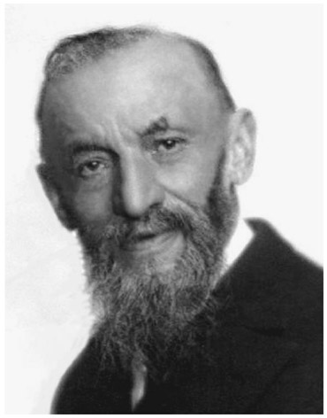
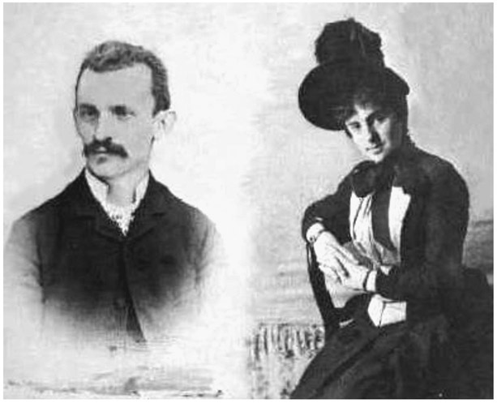
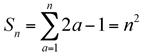

Giuseppe Peano: Italian (1858–1932)
If you have ever wondered where the symbols used in set theory came from, such as a symbol for union (⋃) and for intersection (⋂), then you need look no further than the famous Italian mathematician Giuseppe Peano, who was a prolific writer, and by many considered one of the founders of mathematical logic and set theory. His work involving the understanding of the characteristics of our natural numbers (1, 2, 3, 4, . . .) has remained with us through his Peano axioms, which we will consider after we take a quick look at his life story.
Giuseppe Peano was born on a farm in Spinetta, Piedmont, Italy, on August 27, 1858, where his parents, Bartolomeo Peano and Rosa Cavallo, worked the farm and which provided a three-mile walk for Giuseppe to his school. His uncle noticed that young Giuseppe was a very talented child and took him to Turin to begin his secondary schooling in 1870. By 1876, he enrolled at the University of Turin and graduated at the top of his class in 1880. He stayed at the university after graduation and eventually got to a position where he was the faculty member assigned to teaching calculus, apparently a significant honor at that time. His first written work was a textbook on calculus, which he published in 1848, which was then followed by a book on mathematical logic that has made him famous to this day; it was in this book that he introduced the modern symbols we use in studying sets, such as symbols for intersection and union, as mentioned above.
In 1887, Peano married Carola Crosio, during a time when he was also teaching at the Royal Military Academy, where he was later promoted to

Figure 39.1. Giuseppe Peano.

Figure 39.2. Giuseppe Peano and his wife Carola Crosio in 1887.
professor first-class. That was the time, in 1889, when he published his famous Peano axioms, which allow us to prove many relationships involving the natural numbers. As we mentioned earlier, Peano was a very prolific writer. The journal Rivista di Mathematica, which he founded, had its first publication in 1891. That same year he started a “Formulario Project,” which was a compilation of all the known theorems and formulas used in mathematics; however, in this book he introduced his own notation. This led to some complications in the printing process, since he wanted all formulas to be printed on one line. As a result, he purchased his own printing press to ensure that this requirement was held firm.
In Paris, at the Second International Congress of Mathematicians in 1900, he met the famous British mathematician and logician Bertrand Russell (1872–1970), who was so impressed with his Formulario Project and the innovative logical symbols used therein that he left the conference earlier than planned just so he could read the book sooner. Russell then used Peano’s logic notation in his later writings.
In 1901, when Peano was at the peak of his career, presenting at conferences and teaching calculus, differential equations, and vector analysis, he was also overly involved with his Formulario Project, so much so that his teaching began to weaken, and he was dismissed from the Royal Military Academy. However, he did retain his position at the University of Turin.
It is not uncommon for brilliant people to do things that are sometimes extraordinary or unusual. In 1903, Peano began to write in a form of Latin that he called Latino sine Flexione, which was later referred to as Interlingua and was based on a synthesis of Latin, German, English, and French vocabularies—however, with a very simplified type of grammar, removing all irregular forms. He did give speeches in this form of Latin and it was seen as a new language, one that served an international purpose.
Continuous work on the Formulario Project led to his publishing the fifth edition titled Formulario Mathematico in 1908. By this time the collection contained 4,200 theorems and formulas, along with justifications and proofs.
By 1910, Peano began to concentrate his efforts on writing mathematics texts for the secondary schools as well as a dictionary of mathematics. He also dabbled with international language issues. He continued to publish and to teach, eventually moving from infinitesimal calculus to complementary mathematics, which he felt better suited his style of mathematical thinking. He continued to teach at the University of Turin until he died of a heart attack in Turin on April 20, 1932.
The popular legacy that Peano has left for us are the Peano axioms, which are as follows:
- There exists a natural number 1.
- Every natural number has a unique successor, which is also a natural number.
- The number 1 is not a successor of any natural number.
- If two successors are equal, the numbers of which they are the successors are also equal.
- If a set S of natural numbers contains 1, and if the successor of every number in S is also in S, then S is the set of all natural numbers.
It is the fifth axiom that renders us a form of proof called mathematical induction. This can then be restated thus: if a theorem is true for n = 1, and if the truth of the theorem for n = k implies the truth of the theorem for n = k + 1, then the theorem is true for all positive integral values of n.
Let’s apply this now to prove that the sum of all odd integers is equal to a square number. We would write this symbolically as

, or more simply written as:Sn =1+3+5+∙∙∙+(2n –1) = n2.
Using Peano’s fifth axiom, we must show that the relationship
 , is true for n = 1. That is, S1 = 12 = 1.
, is true for n = 1. That is, S1 = 12 = 1.
This time we will assume that the theorem is true for some value of n, such as k:
Sk =1+3+5+7+∙∙∙+(2k –1) = k2. We must now prove that if this theorem is true for n = k, it must also be true for the next consecutive value of n, which is n = k + 1. To do that we need to add the next odd integer (2k + 1) to both sides of the above equation:
Sk +(2k +1) =1+3+5+7+∙∙∙+(2k –1)+(2k +1) = k2 +(2k +1).
We then get Sk+1 = k2 + 2k +1= (k +1)2.
Thus, we have proved that since the theorem was true for n = 1, and then we assumed it was true for n = k, and then showed it was true for the successor—namely, n = k + 1, we can conclude that it is true for all natural numbers. This is the very important legacy developed by Giuseppe Peano.